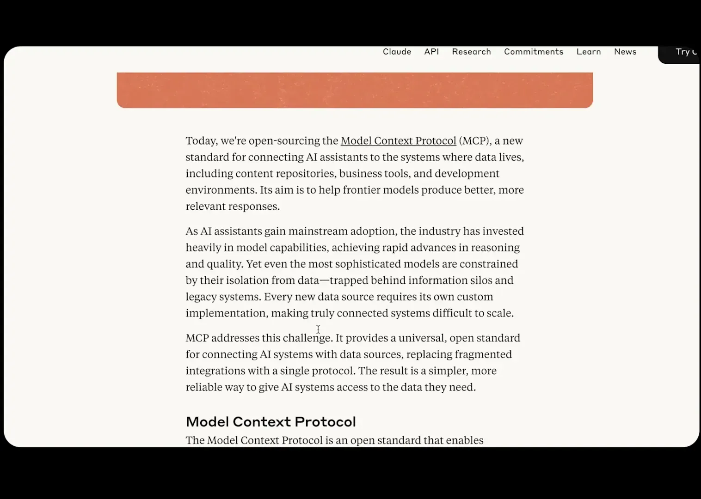
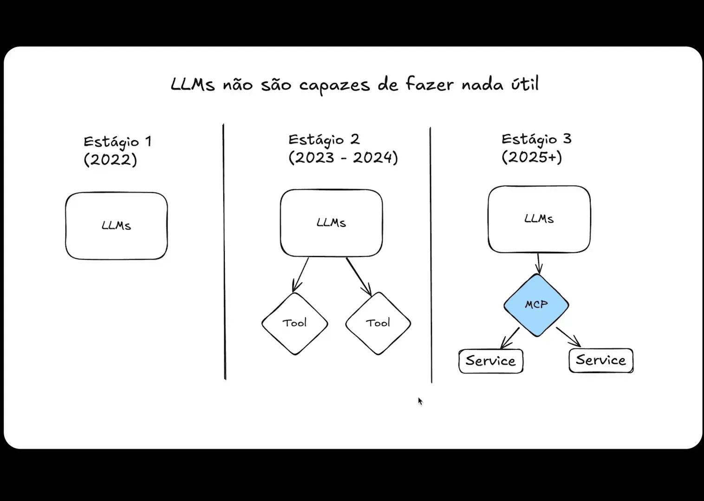
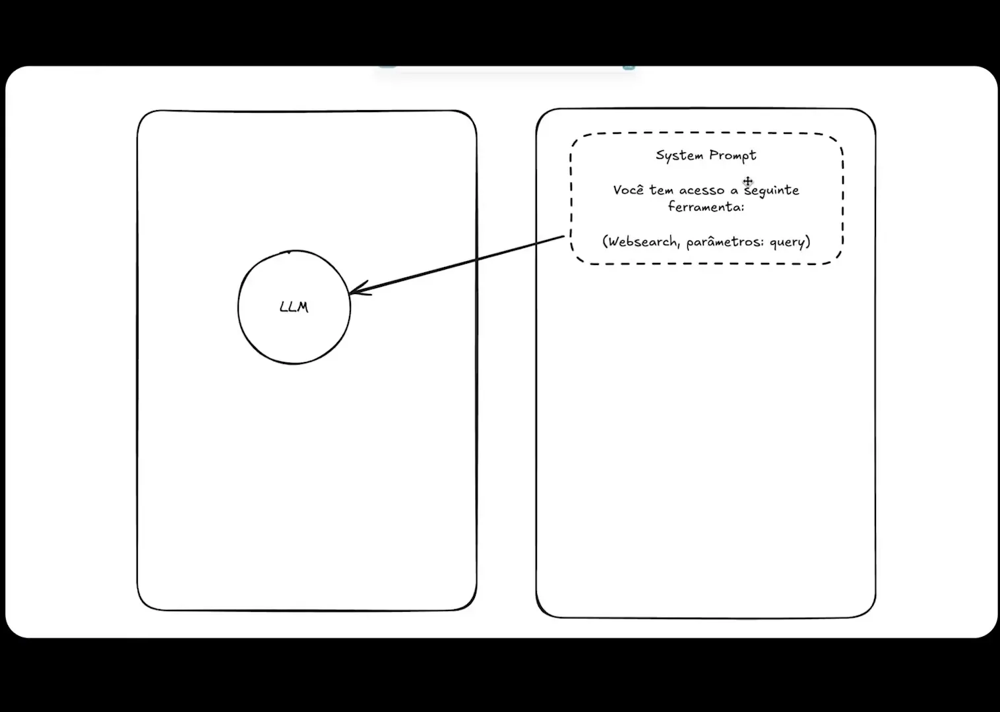
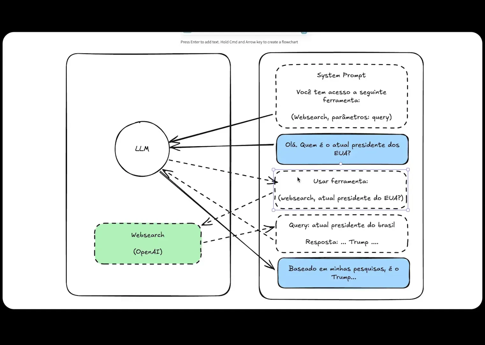
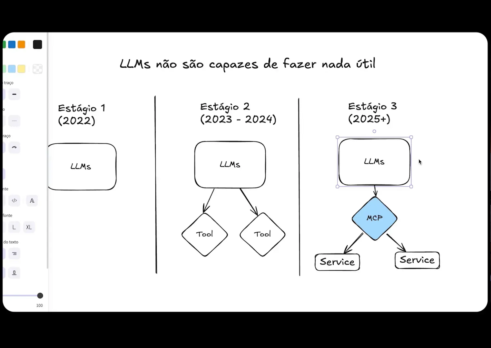
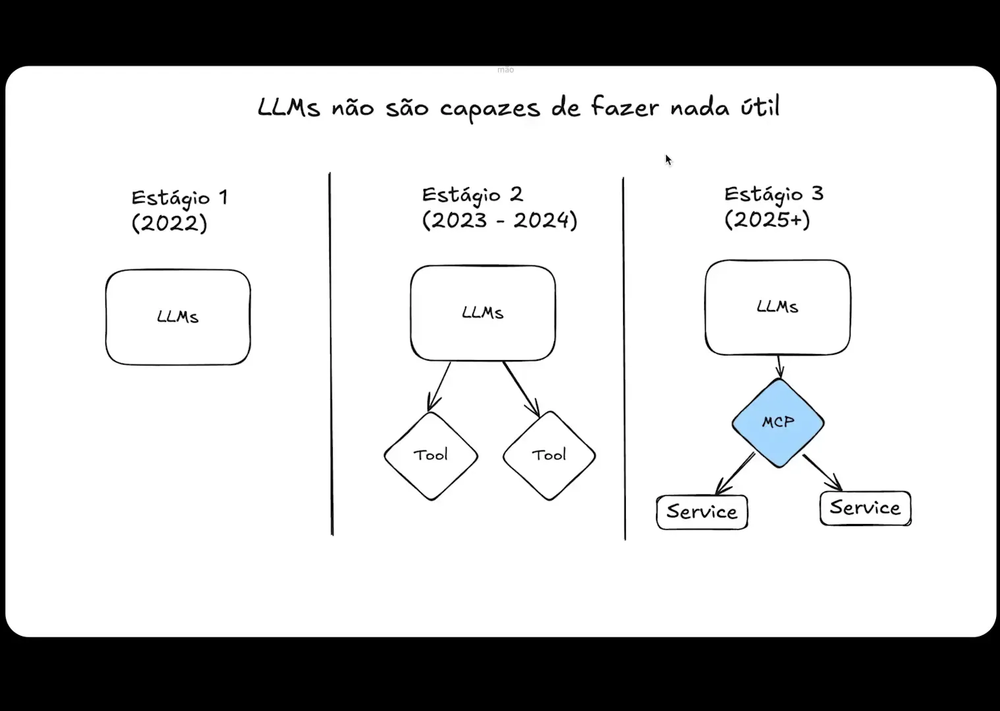
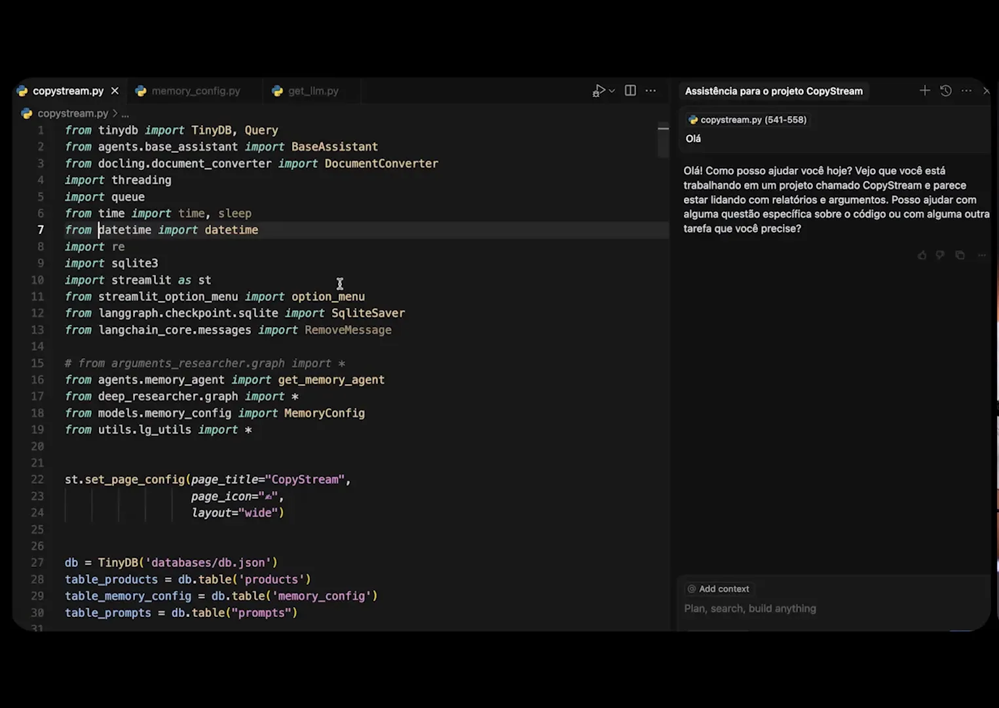
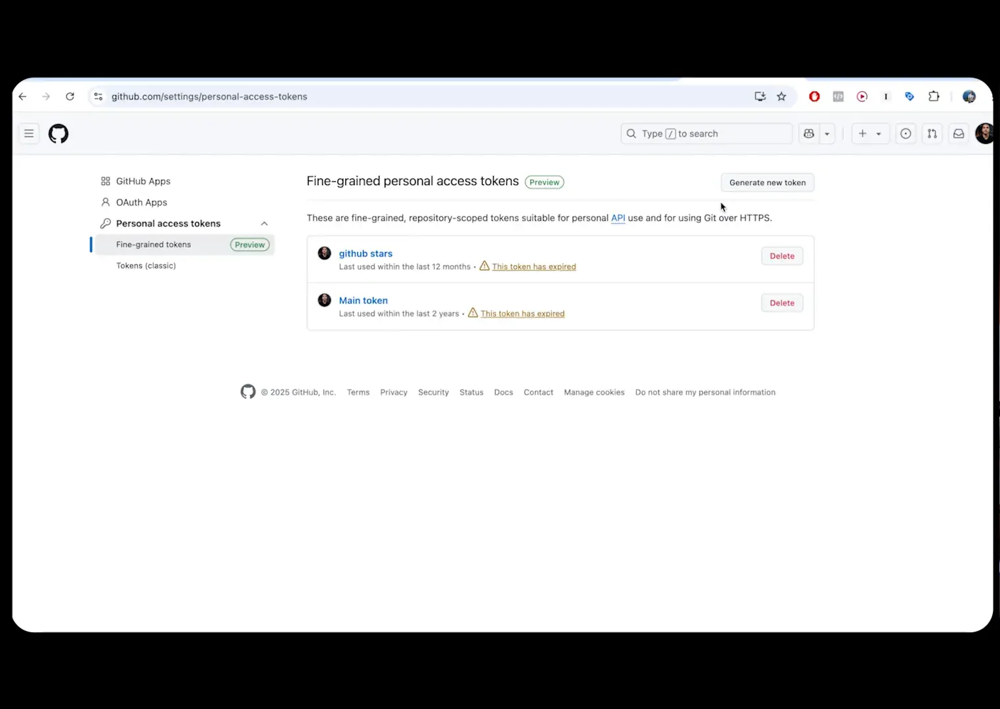
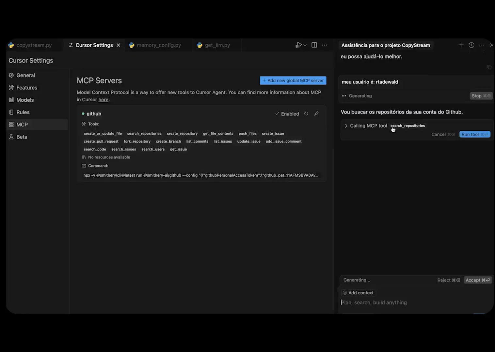

Neste artigo, vamos explorar como os Model Context Protocols (MCPs) estão transformando o desenvolvimento frontend e design com AI. Compreenderemos o que são MCPs, por que estão em alta e como podem ser aplicados na sua rotina de codificação.
Índice
- Passo 1: Introdução aos MCPs 🚀
- Passo 2: O que é MCP? 🤔
- Passo 3: Estágio Atual das LLMs 📈
- Passo 4: Simulando uma Conversa com LLMs 💬
- Passo 5: Qual o Problema do Método Atual? ❌
- Passo 6: A Chegada dos MCPs 🚀
- Passo 7: Como Funcionam os MCPs na Prática? 🔧
- Passo 8: Configurando seu Ambiente de Desenvolvimento 🛠️
- Passo 9: Gerando Token de Acesso no GitHub 🔑
- Passo 10: Integrando MCP no Cursor 🔗
- Passo 11: Listando Repositórios no GitHub 📂
- Passo 12: Conclusão sobre o Potencial dos MCPs 🌟
- FAQ: Perguntas Frequentes sobre MCPs ❓
Passo 1: Introdução aos MCPs 🚀
Os Model Context Protocols (MCPs) estão mudando a forma como interagimos com a inteligência artificial. Eles surgem em um momento em que a tecnologia avança rapidamente, oferecendo novas oportunidades para desenvolvedores e usuários. A ideia é simples: criar um protocolo padronizado para que diferentes modelos de linguagem possam se comunicar com ferramentas de maneira eficiente.
Esse conceito não é totalmente novo, mas sua popularidade explodiu recentemente. Com a crescente adoção de IAs em diversas aplicações, entender os MCPs é essencial para quem quer se manter à frente no desenvolvimento frontend e design com AI.
Por que os MCPs são importantes?
Os MCPs oferecem uma estrutura que permite que ferramentas sejam desenvolvidas uma única vez e utilizadas em diferentes modelos de linguagem. Antes, cada provedor de IA tinha suas próprias especificações, o que tornava o desenvolvimento um processo complexo e demorado. Agora, com os MCPs, essa barreira é reduzida, permitindo uma integração mais fluida e eficaz.
Passo 2: O que é MCP? 🤔
MCP, ou Model Context Protocol, é um padrão desenvolvido pela Antropic que define como os modelos de linguagem devem interagir com ferramentas. Em essência, ele serve como uma ponte entre os modelos de linguagem e as ferramentas que eles podem utilizar.
Esse protocolo é crucial para a evolução das IAs, pois aumenta suas capacidades e facilita a criação de agentes de IA mais poderosos. Em vez de depender de integrações específicas para cada modelo, os desenvolvedores podem focar em criar ferramentas que funcionem com qualquer modelo que suporte o protocolo MCP.

Como os MCPs funcionam?
Os MCPs se baseiam em um cliente e um servidor, onde o cliente solicita serviços e o servidor fornece as ferramentas necessárias. Isso significa que as aplicações podem compartilhar e reutilizar funcionalidades, economizando tempo e esforço no desenvolvimento. A padronização é a chave: uma vez que um desenvolvedor cria uma ferramenta que segue as especificações do MCP, ela pode ser utilizada em qualquer aplicação que suporte o protocolo.
Passo 3: Estágio Atual das LLMs 📈
As LLMs, ou Large Language Models, como ChatGPT e Gemini, passaram por um desenvolvimento significativo nos últimos anos. No entanto, ainda enfrentam limitações em suas capacidades de execução. Elas são essencialmente geradoras de texto e não podem realizar ações no mundo real sem a ajuda de ferramentas externas.
Até recentemente, a interação com ferramentas era rudimentar e dependia de integrações específicas. Com a introdução dos MCPs, as LLMs agora podem se conectar a uma variedade de ferramentas de forma padronizada, ampliando suas capacidades e tornando-as mais úteis em aplicações práticas.

Desafios enfrentados pelas LLMs
- Integração complexa com ferramentas específicas de cada provedor.
- Dificuldade em adaptar-se a mudanças nas APIs das ferramentas.
- Dependência de prompts complexos para executar tarefas.
Passo 4: Simulando uma Conversa com LLMs 💬
Para entender como os MCPs melhoram a interação com as LLMs, vamos simular uma conversa. Imagine que você deseja saber quem é o atual presidente dos Estados Unidos. Ao fazer essa pergunta, a LLM não apenas gera uma resposta, mas também utiliza ferramentas como web search para buscar informações atualizadas.
Esse processo é invisível para o usuário, mas é fundamental. A LLM recebe um prompt que a instrui a usar a ferramenta de busca, formulando uma consulta adequada. A resposta final é então gerada com base nas informações coletadas.

Como funciona a comunicação?
A comunicação entre o usuário e a LLM segue um fluxo específico. O usuário faz uma pergunta, a LLM processa essa pergunta e decide se deve utilizar uma ferramenta. Se sim, ela formata a consulta de acordo com as instruções do MCP e envia para o servidor, que retorna a resposta. Essa sinergia é o que torna os MCPs tão poderosos.
Passo 5: Qual o Problema do Método Atual? ❌
Embora as LLMs tenham avançado, o método atual de integração com ferramentas apresenta desafios significativos. Cada provedor desenvolve suas ferramentas de maneira única, o que resulta em um ecossistema fragmentado. Isso significa que um desenvolvedor precisa criar soluções específicas para cada modelo de linguagem, o que consome tempo e recursos valiosos.
Além disso, se uma API mudar, todo o sistema pode quebrar. Isso torna a manutenção e a escalabilidade um verdadeiro pesadelo para os desenvolvedores.

Implicações para o desenvolvimento
Esses desafios têm implicações diretas no desenvolvimento frontend e design com AI. A necessidade de criar integrações específicas para cada modelo limita a inovação e a capacidade de criar soluções robustas. Os MCPs oferecem uma solução para esses problemas, permitindo que os desenvolvedores se concentrem na criação de ferramentas eficazes que podem ser utilizadas em múltiplos contextos.
Com a adoção dos MCPs, o futuro do desenvolvimento com inteligência artificial parece promissor, abrindo novas oportunidades e simplificando processos complexos.
Passo 6: A Chegada dos MCPs 🚀
A chegada dos Model Context Protocols (MCPs) marca um ponto de virada no desenvolvimento frontend e design com AI. Esses protocolos não são apenas uma inovação; eles são uma revolução que redefine como desenvolvedores interagem com ferramentas de inteligência artificial. Através dos MCPs, a comunicação entre modelos e ferramentas se torna mais eficiente, permitindo que desenvolvedores aproveitem ao máximo as capacidades das IAs.
Com a introdução dos MCPs, os desenvolvedores podem agora integrar ferramentas de forma mais simples e rápida. Esse novo modelo elimina a necessidade de criar soluções específicas para cada provedor de IA, permitindo que os desenvolvedores se concentrem em criar ferramentas que funcionem em diferentes contextos.

Impacto no Desenvolvimento
Os MCPs não apenas simplificam o processo de desenvolvimento, mas também ampliam as possibilidades de criação. Agora, com um protocolo padronizado, as IAs podem acessar uma variedade de ferramentas com facilidade, tornando-se mais versáteis e poderosas. Isso permite que desenvolvedores criem aplicações mais robustas que podem interagir com diversos modelos de linguagem.
Por exemplo, imagine um desenvolvedor que cria uma ferramenta para análise de dados. Com os MCPs, essa ferramenta pode ser utilizada em múltiplos modelos de linguagem, aumentando sua utilidade e alcance.
Passo 7: Como Funcionam os MCPs na Prática? 🔧
Para entender como os MCPs funcionam na prática, é crucial observar o fluxo de trabalho entre um cliente e um servidor de MCP. Quando um desenvolvedor integra uma ferramenta usando o MCP, ele cria um cliente que se comunica com um servidor que armazena as especificações e funcionalidades da ferramenta.

Fluxo de Trabalho
- Configuração do Cliente: O desenvolvedor configura um cliente de MCP que se conecta ao servidor.
- Comunicação com o Servidor: O cliente envia solicitações ao servidor para acessar funcionalidades específicas.
- Interação com Modelos de Linguagem: O servidor retorna as instruções necessárias para que o modelo de linguagem execute as tarefas solicitadas.
Esse fluxo de trabalho simplificado permite que os desenvolvedores integrem novas ferramentas com rapidez e eficiência, aumentando sua produtividade e inovação.
Passo 8: Configurando seu Ambiente de Desenvolvimento 🛠️
Configurar seu ambiente de desenvolvimento para utilizar MCPs é um processo simples e direto. A primeira etapa é escolher uma IDE que suporte a integração com servidores de MCP. O Cursor, por exemplo, é uma excelente escolha, pois foi projetado especificamente para funcionar com MCPs.
Após instalar a IDE, você precisará configurar os servidores de MCP desejados. Isso pode ser feito diretamente nas configurações da IDE, onde você pode adicionar novos servidores conforme necessário.

Passos para Configuração
- Baixar e Instalar a IDE: Acesse o site do Cursor e faça o download da versão mais recente.
- Configurar Servidores de MCP: Nas configurações da IDE, adicione os servidores de MCP que você deseja utilizar.
- Testar a Integração: Após a configuração, faça um teste simples para garantir que tudo está funcionando corretamente.
Esses passos garantem que você esteja pronto para começar a explorar as possibilidades oferecidas pelos MCPs em seu desenvolvimento frontend e design com AI.
Passo 9: Gerando Token de Acesso no GitHub 🔑
Uma das etapas essenciais para integrar MCPs com ferramentas como o GitHub é gerar um token de acesso. Esse token permite que a sua aplicação se comunique de forma segura com a API do GitHub, garantindo que você tenha as permissões necessárias para executar ações.
Para gerar um token de acesso, você deve acessar as configurações do GitHub e seguir alguns passos simples. O token deve ser configurado com as permissões adequadas para garantir que sua aplicação possa realizar as operações desejadas.

Passos para Gerar o Token
- Acesse Configurações: Vá até as configurações do seu perfil no GitHub.
- Desenvolvedor Settings: Clique em “Developer settings” e, em seguida, em “Personal access tokens”.
- Gerar Novo Token: Clique em “Generate new token” e selecione as permissões necessárias.
Uma vez gerado, copie o token e armazene-o em um local seguro. Você precisará dele para conectar sua aplicação ao GitHub através do MCP.
Passo 10: Integrando MCP no Cursor 🔗
Agora que você configurou seu ambiente de desenvolvimento e gerou seu token de acesso, é hora de integrar o MCP no Cursor. Essa integração permitirá que você utilize o modelo de linguagem para interagir com o GitHub e outras ferramentas de forma mais eficiente.
No Cursor, a integração é feita de maneira simples. Após inserir o token de acesso, você poderá executar comandos diretamente no seu repositório do GitHub através da interface da IDE.
Passos para Integração
- Login no Cursor: Faça login na sua conta do Cursor e acesse as configurações de MCP.
- Inserir Token: Cole o token de acesso que você gerou anteriormente.
- Testar Comandos: Inicie um teste enviando comandos para verificar se a integração está funcionando corretamente.
Com a integração concluída, você poderá aproveitar ao máximo as capacidades do MCP, facilitando seu fluxo de trabalho e potencializando suas habilidades de desenvolvimento frontend e design com AI.
Passo 11: Listando Repositórios no GitHub 📂
Uma das funcionalidades mais empolgantes que podemos acessar através dos MCPs é a capacidade de listar repositórios diretamente do GitHub. Isso é especialmente útil para desenvolvedores que precisam gerenciar vários projetos e desejam uma maneira rápida de acessar suas informações sem sair do ambiente de desenvolvimento.
Para realizar essa tarefa, após a configuração do MCP no Cursor, você pode simplesmente enviar um comando em linguagem natural. O modelo de linguagem, utilizando o protocolo MCP, se encarrega de interagir com a API do GitHub e retornar os dados necessários.

Como Listar Repositórios
- Abra o Cursor: Certifique-se de que você está logado e que o MCP do GitHub está devidamente configurado.
- Envie um Comando: Digite algo como “Olá, você consegue listar todos os repositórios do meu GitHub?”
- Aguarde a Resposta: O modelo de linguagem fará uma chamada à API do GitHub e retornará uma lista dos seus repositórios.
Esse processo é rápido e eficiente, permitindo que você se concentre mais no desenvolvimento e menos na gestão de projetos. A integração dos MCPs com ferramentas como o GitHub mostra o potencial da inteligência artificial no desenvolvimento frontend e design com AI.
Passo 12: Conclusão sobre o Potencial dos MCPs 🌟
Os Model Context Protocols (MCPs) estão redefinindo as fronteiras do desenvolvimento e design com inteligência artificial. Ao permitir que diferentes modelos de linguagem interajam com ferramentas de maneira padronizada, os MCPs abrem um leque de possibilidades que antes eram impensáveis.
Com a capacidade de acessar e utilizar ferramentas como o GitHub de forma integrada, os desenvolvedores podem aumentar sua produtividade e eficiência. A simplicidade da comunicação entre modelos e ferramentas, mediada pelos MCPs, é uma verdadeira revolução.
O Futuro dos MCPs
À medida que mais desenvolvedores adotam essa tecnologia, podemos esperar um crescimento exponencial de aplicações e ferramentas que utilizam MCPs. Isso não apenas melhorará a eficiência do desenvolvimento, mas também criará um ecossistema mais colaborativo e inovador.
Se você ainda não experimentou os MCPs, agora é a hora. A integração com IDEs como o Cursor torna o processo simples e acessível, permitindo que você aproveite ao máximo as capacidades da inteligência artificial.
FAQ: Perguntas Frequentes sobre MCPs ❓
1. O que são Model Context Protocols (MCPs)?
Os MCPs são protocolos padronizados que permitem a comunicação entre modelos de linguagem e ferramentas. Eles foram desenvolvidos pela Antropic para simplificar a integração de diferentes sistemas.
2. Como os MCPs melhoram o desenvolvimento frontend?
Os MCPs eliminam a necessidade de criar soluções específicas para cada modelo de linguagem, permitindo que os desenvolvedores integrem ferramentas de forma mais rápida e eficiente.
3. Quais ferramentas posso usar com MCPs?
Você pode usar uma variedade de ferramentas, incluindo GitHub, Notion e outras APIs, dependendo do que os servidores MCP oferecem. A flexibilidade é uma das grandes vantagens dos MCPs.
4. É fácil integrar MCPs no meu ambiente de desenvolvimento?
Sim! A integração é simples, especialmente se você estiver usando uma IDE como o Cursor, que suporta facilmente a adição de servidores de MCP.
5. O que o futuro reserva para os MCPs?
Com a crescente adoção de MCPs, podemos esperar um aumento na criação de ferramentas e aplicações que utilizam essa tecnologia, tornando o desenvolvimento mais eficiente e colaborativo.
Os MCPs não são apenas uma tendência passageira, mas sim uma evolução significativa na forma como interagimos com a inteligência artificial. A inteligência artificial desenvolvimento frontend design ai está mais acessível e poderosa do que nunca. Prepare-se para explorar novas possibilidades!